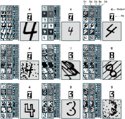
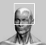

|  | MNIST tutorial by Pierre Sermanet. How to build and train a handwritten digit recognition system using libeblearn |
| NORB demo by Pierre Sermanet. How to build and train an object recognition system using libeblearn |
|
|  | Facenet tutorial by Cyril Poulet. How to build and train a face detector using Eblearn and Eblearn_gui libraries |